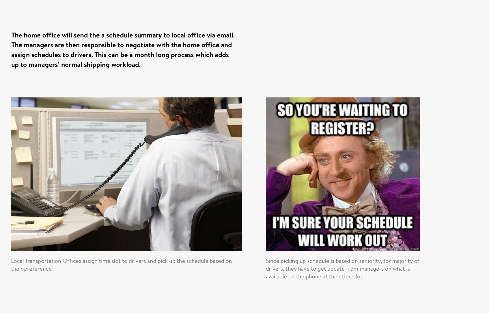
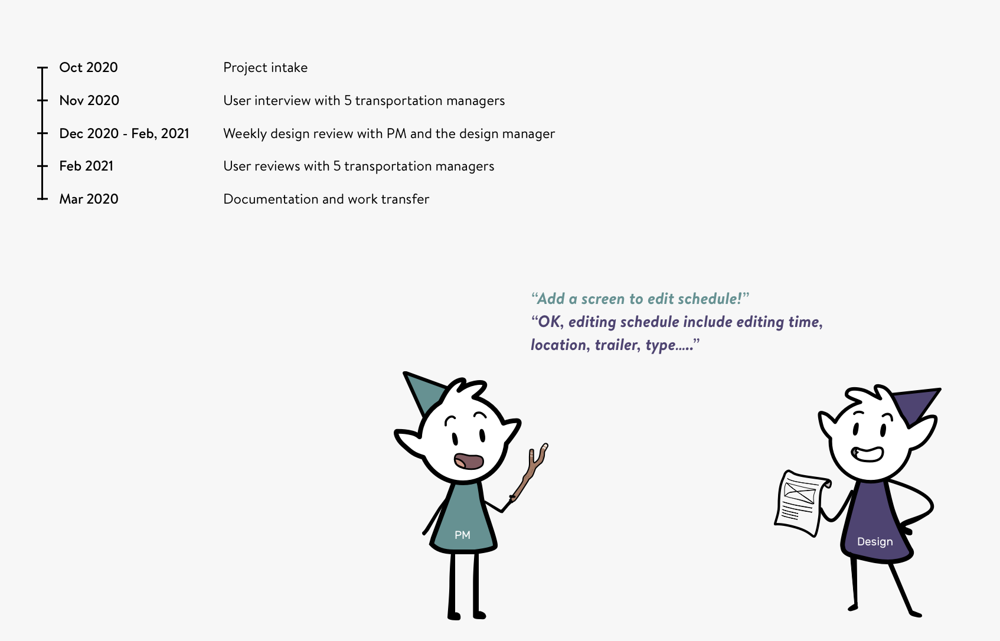
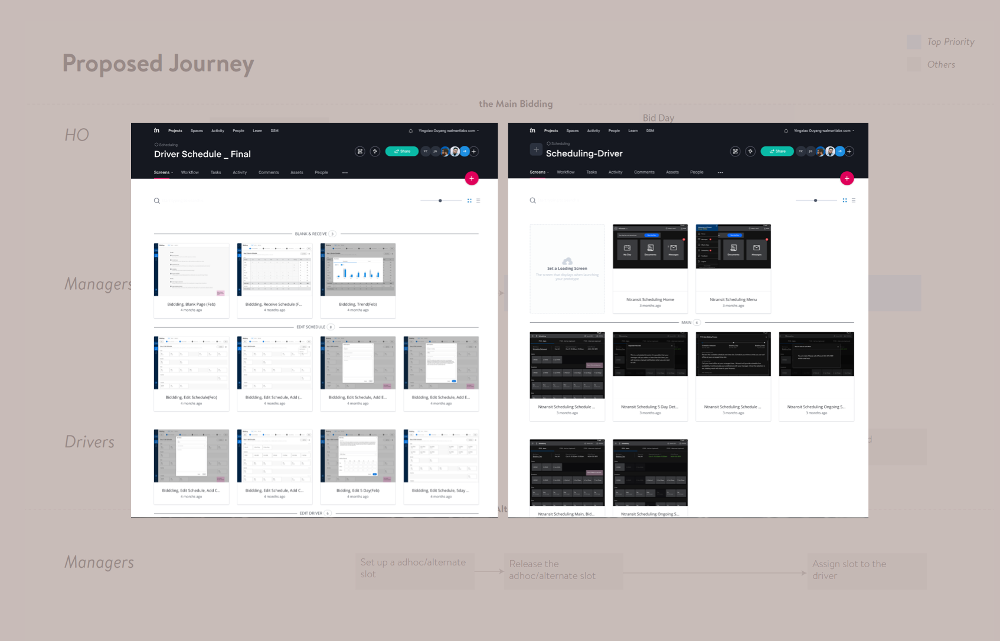

Scheduling
Digitize schedule bidding process for Walmart Transportation Managers (NDA)
Background
Affected by business changes, Walmart transportation managers need to facilitate a schedule bidding process almost every year. Right now, every local office spends 4-6 weeks to finish this admin task. This design project aims to prove it is feasible and scalable to digitize this process. This will reduce managers' workload and let them focus on more critical tasks.

My role
I created a web application and a tablet application to digitize and standardize the bidding process. These two prototypes provide answers to three product questions. Can we optimize the current bidding process through technology? Is it feasible? Is it flexible? I also partnered with the product manager to conduct user research and user testing with 10 local offices.
Outcome
Through five months work, our team discovered three types of schedule bidding. I designed two prototypes for managers and drivers for the full user journey. The design won support from leadership in transportation product org and is being finalized by another design team. To aid this work transfer, I provided all the source files and a detailed process book. My manager commented that: "Overall you're doing awesome on this work! Just pushing it as much as we can 🙂."
Restricted by Non-disclosure Agreement, I am not able to display critical business information in my portfolio. To learn more about this project, please view Google Slides with passwords in my resume. Or contact me through LinkedIn @Yingxiao Ouyang or Email lunaatlgt@gmail.com .
Intake
Leading users through a standard but flexible process
After three iterations, I finaly slice and dice the info, extracted from various legacy excel files, into a standard but flexible process. There are several design details to achieve this goal. A wizard UI is introduced to help users understand where they are and what is next. A title and subtext helps them to confirm the actions in every step. The process is chunked in a way users can feel they are making progress. Some steps are optional and can work in two different operation methods. In this way, local office will be able to improve bidding process and get rid of excel files without changing operation habit.

Design with real data
From mid-fi prototype to high-fi prototype, I used the real schedule data from an office. This revealed edge cases undercovered by dummy data. Not all offices have every type of programs. The previous design failed to found a way to display unavailable programs. I spend a week redesigning the slot dashboard to include this edge case scenario. This process makes sure the dashboard is user-friendly no matter what programs the office receives. Demoing with real data also helps to build trust from managers and leadership roles.

Design for all touchpoints
Drivers are secondary user groups we target at. Although most of the time is spent on main target users, I also made a tablet app for managers using Living Design, dark theme, mobile UI. This helps the team to review the concepts in a more systematic way. When demoing the concepts to managers, the tablet UI helps them to understand how this concept will work in the future.

Documentation and transfer work
Due to org change, we transferred this work to another design team. As there are many business and product details, I created a process book to document all the design decisions. It explains the marketing standing, the difference in operations, what we have decided to do and not to do. I send out the process book to the designer which greatly help them onboarding with this project.

And...
I wanted to thank my design manager for his support and leadership. I have been learning a lot under his supervision. In this project, I learned to ba patient, do the right thing and move fast.